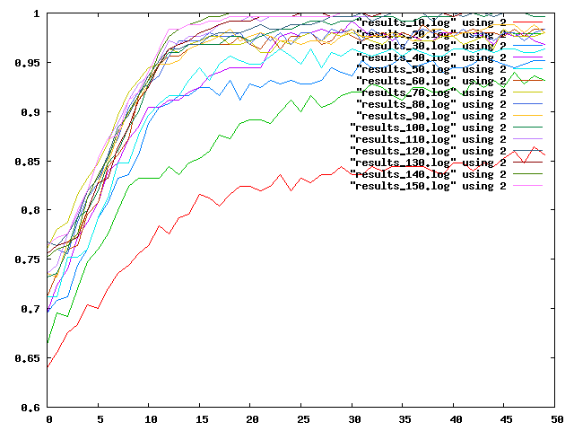

Prvni cast - upravena fitness - na githubu tady
https://raw.github.com/runn1ng/skola/master/skola_evoluce/src/eva2010/cv1/BitGAFitness.java
Druha cast - pokusy

Nechal jsem počet generací, zvedal jsem pomalu populaci.
Je vidět, že skok z populace 10 do populace 20 zlepší kvalitu v podstatě dvojnásobně, pak už to jde pomaleji. Zvyšování se zpomalí asi tak v populaci 70, od 70 do 150 už "leze" velmi pomalu.